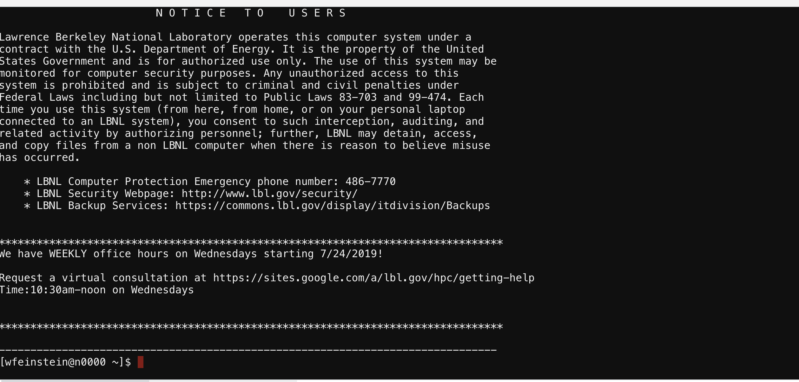
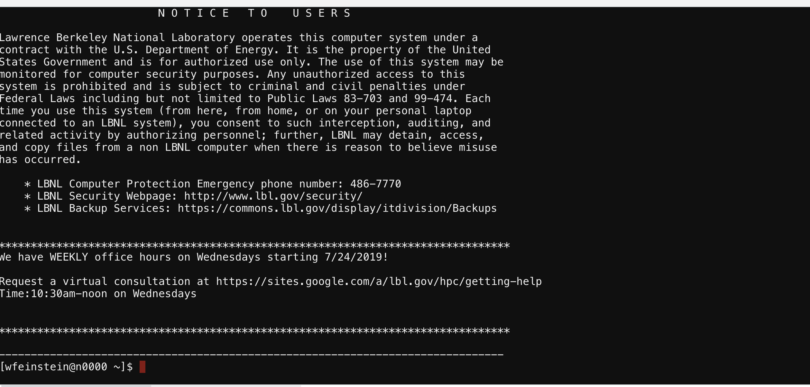
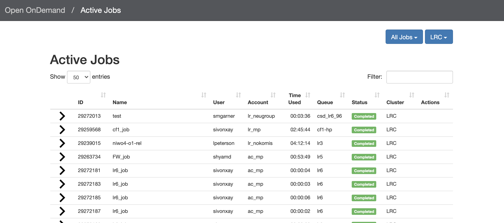
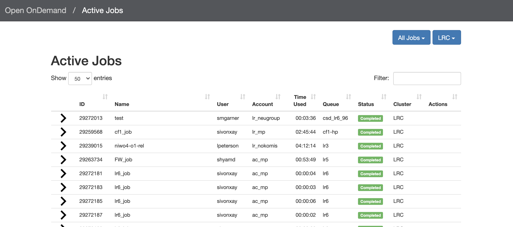

Open OnDemand HPC Training
March 10, 2021
Wei Feinstein
Outline
- What is Open OnDemand on Lawrencium
- How to access OOD
- Open OnDemand features
- File management
- Cluster shell access
- Job submission and monitoring
- Interactive apps
- Hands-on exercises
What is Lawrencium Open OnDemand
- Lawrencium Open OnDemand portal is based on Open OnDemand (https://openondemand.org/), an open source web platform
- Users can access HPC clusters and services with a web browser.
- Provide an intuitive interface and allows new users to be instantly productive at using the HPC resources for their research
- Provide an alternative convenient way for experienced users to access the HPC resources.
- The portal has a flexible and extensible design that makes it easy to deploy new services as needed.
Services Provided
- File transfer and management
- File editing
- Shell access
- Job submission and monitoring
- Interactive applications
- Juyter Notebook
- RStudio
- MatLab
- VMD
Dashboard

Files


File/directory Management
- Tradition
- Linux file editing, vi, nano, emacs
- File transfer: rsync, scp
- Globus still an option of file transfer
- New avenue to manage files/dirs
- Viewing files
- Text editing
- Copy/Paste
- Renaming files
- Creating files
- Creating directories
- Deleting files
- File upload/download
Cluster Shell Access
Provide the conventional cluster access: command line/terminal
 

Job Management
Monitoring, Job Composing and Submission
 

Job Composer
- From templates
- From specific path
- From selected job

Job Templates
- Provided by system admins
- Defined by users

Job Submission Directory
- Two ways to cope with the default directory created by the job composer.
- The default directory as the working directory of your job. This means you need to upload all input files to that directory before you can click the submit button. This can be easily done by clicking ‘Open Dir’ right beneath the job script contents. A file explorer will open the job directory in a new tab where you can do file transfers.
- if you already have the input files stored somewhere in the cluster and don’t want to move them around, or you prefer to have an organized directories by yourself, you can simply add one command line in the job script before any other command line, where /path/to/job_working_dir is the directory you want all the commands to be executed:
cd /path/to/job_working_dir
Interactive Apps


Jupyter Notebook App
- Three types of use:
- Interactive-mode, for exploration
- Interactive-mode-gpu, for exploration
- Compute mode: standarded Lawrencium partitions (e.g.: lr5,lr6,es1…)

Slurm Account, Partition, QOS from an Access Shell
sacctmgr show association user=wfeinstein -p
Cluster|Account|User|Partition|Share|Priority|GrpJobs|GrpTRES|GrpSubmit|GrpWall|GrpTRESMins|MaxJobs|MaxTRES|MaxTRESPerNode|MaxSubmit|MaxWall|MaxTRESMins|QOS|Def QOS|GrpTRESRunMins|
perceus-00|pc_scs|wfeinstein|lr6|1||||||||||||lr_debug,lr_lowprio,lr_normal|||
perceus-00|ac_test|wfeinstein|lr5|1||||||||||||lr_debug,lr_lowprio,lr_normal|||
perceus-00|pc_test|wfeinstein|lr4|1||||||||||||lr_debug,lr_lowprio,lr_normal|||
perceus-00|pc_test|wfeinstein|lr_bigmem|1||||||||||||lr_debug,lr_lowprio,lr_normal|||
perceus-00|lr_test|wfeinstein|lr3|1||||||||||||condo_test|||
perceus-00|scs|wfeinstein|es1|1||||||||||||es_debug,es_lowprio,es_normal|||
...
Jupyter Notebook GUI

Kernels: - python2, 3 - TF
Matlab App
- Enabled on GPU and CPU nodes

Matlab App Launch

RStudio GUI
Log out and Cleanup
Log out - To properly log out the portal, you must do two things: (1) log out the portal by clicking ‘Log out’ from the top navigation bar; (2) close the browser to completely terminate the session. - Be aware that only logout of the portal is not enough. You must also close the entire browser (not just the tab), a side effect of CAS. This is very important if you are using a public computer.
Cleanup The portal stores temporary files for interactive apps in $HOME/ondemand/data/sys/dashboard/. Although the disk space used by those files accumulate slowly, it is a good habit to clean this directory periodically.
rm -rf $HOME/ondemand/data/sys/dashboard/batch_connect/sys/*
Open Ondemand
- Single web point of entry to Lawrencium supercluster
- Allow access to Lawrencium compute resources
- Supercomputer access
- File browser: file editing, data transfer
- Shell command line access - terminal
- Monitor jobs:/?
- Interactive applications: Jupyter notebooks, MatLab, RStudio…
- Jupyter notebook
- Two partitions, including 4 CPU nodes and 1 GPU node, for code exploration
- Access to all Lawrencium partitions for running computing jobs
- Sever: https://lrc-ondemand.lbl.gov/
- Intel Xeon Gold processor with 32 cores, 96 GB RAM
Getting help
- Virtual Office Hours:
- Time: 10:30am - noon (Wednesdays)
- Online request
- Sending us tickets at hpcshelp@lbl.gov
- More information, documents, tips of how to use LBNL Supercluster http://scs.lbl.gov/
To improve our HPC training and services, please fill out Training Survey